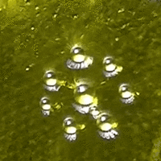
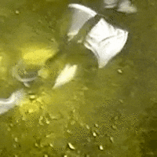
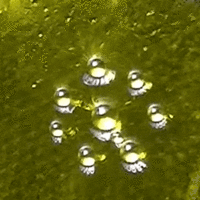
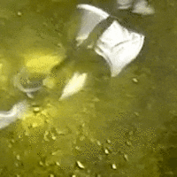

Walking droplets
Introduction
Walker (1978) first coined the term ‘walking droplet’ for a droplet bouncing around randomly in a vibrating fluid bath. In this magazine article, Walker describes James A. Raymond’s experiment in which he produced droplets of a water-detergent mixture bouncing on a vibrating bath for up to a few dozens of seconds. Silicon oil replaced the water-detergent mixture in later studies (Protière et al. (2006)) and the lifetime of the droplets was considerably extended. A study of ‘walking droplets’ in a circular corral revealed a statistical behavior similar to that of electrons in quantum corrals (Harris and Bush (2013)). The analogy with quantum mechanics was further explored in a hydrodynamic reconstruction of the double-slit experiment (Pucci et al. (2018)), with contested results (Klapp et al. (2016)). The topic of bouncing droplets revivified the pilot-wave theory of De Broglie (1927), in which quantum objects are localized and guided by a wave, not unlike the droplets. He quickly abandoned the theory because although it provided a deterministic description of quantum mechanics, it involved variables that cannot or have not been determined. Bouncing droplets seem to exhibit many behaviors similar to that of particles in the pilot-wave description (Bush (2015)). We reproduced Raymond’s experiment with linseed oil and characterized the bouncing droplets.
Theory


Usually, when two volumes of the same fluid come into contact with each other (e.g. an oil droplet and a static oil bath), surface tensions try to minimize the interface between the two. The air trapped between the two volumes escapes softly and eventually the droplet coalesces with the oil bath. If the air separating the surfaces flows, a lubrication effect generates an upward lift on the droplet, maintaining the surfaces apart for a longer time. Couder et al. (2005) showed that the drainage process of the air can be delayed by oscillating the bath vertically. Suppose that the vertical position of the oil bath follows:
where \(A_{s}\) and \(f_{s}\) are respectively the amplitude and frequency of the oil bath. The acceleration can be defined as \(\gamma_s=(2\pi f)^{2}A_s\). The Ohnesorge number associated with our experimental setup is smaller than one, so the deformations of the droplet cannot be neglected (Gilet et al. (2008)).
with respectively \(\nu\), \(\rho\) and \(\sigma\) the viscosity, density, surface tension of the fluid and \(R\) the radius of the droplet. The droplet’s bouncing can be modelled by a differential equation describing the vertical displacement of the center of mass of the droplet \(y\). In the frame of the vibrating bath, the droplet feels an apparent gravity \(m(\gamma_s \cos(2\pi f_s t)-g)\) (\(m\) is the mass of the droplet and \(g=9.81\) m.s\(^{-2}\) the gravitational field). The surrounding air exerts a force \(F\) on the droplet. This force can be neglected except when there is a thin layer of air between the droplet and the bath surface. One can write Newton’s second law applied to the droplet as:
Lubrication theory must be used to estimate \(F\), which is a function of the thickness of the air layer \(h\) and its rate of decrease \(\dot{h}\). Eventually, the vertical displacement of a droplet in time \(y(t)\) can be numerically computed.
Experimental setup
The basic components of the experimental setup are described above. We decided to use edible linseed oil, which is cheaper and easier to obtain than silicon oil (Harris et al. (2017)). The flatness of the surface of the oil bath at rest had to be carefully adjusted prior to acquiring data. We generated droplets by dipping and immediately pulling out a needle-shaped object in the linseed oil bath. A syringe of diameter \(6.382\times 10^{-4}\) m allowed us to create droplets with \(D \in [4.0\times 10^{-4} \textrm{m},9.0\times10^{-4} \textrm{m}]\), where \(D\) is the diameter of the droplet. A \(4.3\times 10^{-3}\) m lollipop tube enabled us to produce droplets with \(D \in [9.0\times 10^{-4} \textrm{m},2.5\times10^{-3} \textrm{m}]\). We did not control the diameter of a droplet. On the other hand, we could set the frequency \(f_g\) and amplitude \(A_g\) of the function generator. This signal was translated by the speaker into a sinusoidal oscillation, of frequency \(f_s\) and acceleration \(\gamma_s\) directly applied to the liquid bath. In general \(f_g \approx f_s\) whereas \(A_g\) was not directly related to \(\gamma_s/(2\pi f_s)^2\), because of our use of an amplifier.
The camera could film at up to 500 frames per second. In the top-view setup, we aligned the camera vertically above the liquid bath and filmed at 50 frames per second. This way, we could easily follow the trajectory of a droplet on the surface of the liquid bath but we lost information about its vertical acceleration and frequency. In the side-view setup we could recover this information by filming at 400 frames per second. We used a 50 cm focal length lens in order to have a good focus on the bouncing droplets. We recorded short videos of various droplets, for different \((f_g,A_g)\) parameters, using the diameter of the needle as a spatial calibration. We post-treated the videos using the software Tracker. For a given video of a droplet, we could generally extract simultaneously \(D\), \(\gamma_s\), \(f_s\), \(\gamma_d\), \(f_d\) where \(\gamma_d\) and \(f_d\) are respectively the vertical acceleration and frequency of a bouncing droplet.
Results

The above figure shows the almost linear dependency between the frequency \(f_s\) and the acceleration \(\gamma_s\) of the fluid bath at the Faraday threshold. To get this result, we used the side-view setup. We set \(f_g\) at a chosen value and increased \(\gamma_g\) until the twisted Faraday patterns appeared. We recorded this transition at 400 frames per second and measured from the videos \(f_s\) and \(\gamma_s\) at the regime transition (shown in the two pictures above and under the linear regression curve). All of our subsequent results were obtained in the stable regime, under the curve.
The above figure was made by analyzing 95 droplets and extracting from the associated videos their radius \(R_0=D/2\), \(\gamma_s\) and \(f_s\). Two dimensionless parameters could be constructed from the many variables of our experiment; firstly a vibration number:
where \(\omega=2\pi f_s\) is the bath angular frequency and \(\omega_D=\sqrt{\sigma/(\rho R_0^3)}\) is a characteristic drop oscillation frequency. And secondly a peak non-dimensional bath acceleration:
where \(g=9.81\) m.s\(^{-2}\) is the gravitational acceleration.
This couple of parameters \((\Gamma,\Omega)\) was computed for each of the droplets and plotted on a \(\Gamma - \Omega\) plane. Each droplet was qualitatively labelled as either a ‘walker’, a ‘drifter’ or a fixed droplet. Intermediary behaviors exist but are very hard to identify with unaided eyes.
A closer look at the oscillating behavior of individual droplets is necessary to understand why they may behave differently from each other. Similar modes of vibration are usually found between droplets belonging to the same region of the \(\Gamma - \Omega\) plane. A mode can be characterized as a couple of values \((n,m)\) where \(n\) is the number of times a droplet bounces while the liquid bath oscillates \(m\) times. The main modes are presented in the figure above. In these figures, the oscillation of the fluid bath is a curve fit of the experimental data performed using the SciPy python library.
Discussion
The almost linear relation between the acceleration and the frequency of the fluid bath at the Faraday threshold was obtained in prior experiments (Slaughter (2014)). The characterization of the droplets in the regime diagram may have been overly simplistic. It would have been more rigorous to determine the bouncing mode of each droplet, but this is extremely time-consuming. Our conclusion that ‘walkers’ are concentrated in one region of the \(\Gamma-\Omega\) plane is in agreement with literature (Moláček and Bush (2013)). We never managed to extend the lifetime of ‘walking droplets’ beyond a few dozen seconds. This is mostly due to our poor frequency generator fluctuating slightly in time. The fastest ‘walkers’ are obtained very near the Faraday threshold. This threshold is very unstable and any fluctuation of the frequency may disrupt the flatness of the fluid bath. On the other hand, we managed to keep almost static (in the plane) droplets bouncing for several minutes.
  
 Droplets always interact with each other in some fashion. When two ‘walkers’ pass each other, different behaviors have been observed. If the radii of the droplets are very different, a common outcome is the absorption of the smaller droplet by the bigger one. At high velocities and similar droplet radii, they may orbit each other, until one of them coalesces with the fluid bath. Often, droplets tend to remain at a stable small distance from each other. This property could be used to create crystal-like structures of droplets.
Introducing a new droplet in such a complex usually resulted in a quick and chaotic reorganization of the crystal. All of these observations were qualitative and would need more time to be properly studied.
Most of the data was obtained by tracking droplets. It means that we were limited by the resolution of our camera. Some droplets were only a few pixels large and their tracking might have been approximate. In addition, the droplets were never perfectly spherical. Although we could obtain precise frequency measurements (an uncertainty \(\Delta f_{s,d} =0.3\) Hz), by averaging a large number of \(y(t)\) periods, the accelerations were very sensitive to the slightest tracking errors. Fortunately, our computations only involved \(\gamma_s\), the acceleration of the fluid bath which was easier to track than most droplets and eventually led to a smaller error (\(\Delta \gamma_s=3\) m.s\(^{-2}\), which may seem a lot but is more of a bias than an error).
Conclusion
As a conclusion, this experiment enabled us to investigate the strange behavior of ‘walking droplets’. From bouncing modes to interactions between droplets, the observations were diverse and should provide a first, basic introduction to the hot topic of bouncing droplets. Many observations were not presented in this report due to a lack of time, and are left aside for future investigations. Furthermore, material issues prevented us from generating stable ‘walkers’ and consequently from observing their statistical behavior. The double-slit experiment was quickly dismissed for the same reason. A macroscopic object whose motion is dictated by a ‘guiding’ wave is a fascinating object and other analogies with quantum phenomena will certainly be found in the near future.
Acknowledgements
We are thankful to researcher N. Papageorgiou who provided us with this topic idea, and was our pilot-wave. We are also grateful to the rest of the teaching staff who assisted us and provided the required gear and equipment.
Bibliography
Louis de Broglie. La mécanique ondulatoire et la structure atomique de la matière et du rayonnement. Journal de Physique et le Radium, 8(5):225–241, May 1927. URL: http://dx.doi.org/10.1051/jphysrad:0192700805022500, doi:10.1051/jphysrad:0192700805022500. ↩
John W.M. Bush. Pilot-Wave Hydrodynamics. Annual Review of Fluid Mechanics, 47(1):269–292, January 2015. URL: http://www.annualreviews.org/doi/10.1146/annurev-fluid-010814-014506, doi:10.1146/annurev-fluid-010814-014506. ↩
Y. Couder, E. Fort, C.-H. Gautier, and A. Boudaoud. From bouncing to floating: noncoalescence of drops on a fluid bath. Physical Review Letters, 94(17):177801, May 2005. doi:10.1103/PhysRevLett.94.177801. ↩
T. Gilet, D. Terwagne, N. Vandewalle, and S. Dorbolo. Dynamics of a bouncing droplet onto a vertically vibrated interface. Physical Review Letters, 100(16):167802, April 2008. doi:10.1103/PhysRevLett.100.167802. ↩
Daniel M. Harris and John W. M. Bush. The pilot-wave dynamics of walking droplets. Physics of Fluids, 25(9):091112, September 2013. URL: http://aip.scitation.org/doi/10.1063/1.4820128, doi:10.1063/1.4820128. ↩
Daniel M. Harris, Julio Quintela, Victor Prost, P.-T. Brun, and John W. M. Bush. Visualization of hydrodynamic pilot-wave phenomena. Journal of Visualization, 20(1):13–15, February 2017. URL: http://link.springer.com/10.1007/s12650-016-0383-5, doi:10.1007/s12650-016-0383-5. ↩
Jaime Klapp, Leonardo Di G. Sigalotti, Abraham Medina, Abel López, and Gerardo Ruiz-Chavarría. Recent Advances in Fluid Dynamics with Environmental Applications. Springer, June 2016. ISBN 978-3-319-27965-7. ↩
Jan Moláček and John W. M. Bush. Drops walking on a vibrating bath: towards a hydrodynamic pilot-wave theory. Journal of Fluid Mechanics, 727:612–647, July 2013. URL: https://www.cambridge.org/core/product/identifier/S0022112013002802/type/journal_article, doi:10.1017/jfm.2013.280. ↩
Suzie Protière, Arezki Boudaoud, and Yves Couder. Particle–wave association on a fluid interface. Journal of Fluid Mechanics, 554:85–108, May 2006. URL: https://www.cambridge.org/core/journals/journal-of-fluid-mechanics/article/particlewave-association-on-a-fluid-interface/9B8A233B4C241BAAB59BF6E67A5CE0EA, doi:10.1017/S0022112006009190. ↩
Giuseppe Pucci, Daniel M. Harris, Luiz M. Faria, and John W. M. Bush. Walking droplets interacting with single and double slits. Journal of Fluid Mechanics, 835:1136–1156, January 2018. URL: https://www.cambridge.org/core/product/identifier/S002211201700790X/type/journal_article, doi:10.1017/jfm.2017.790. ↩
Lisa Slaughter. Viscosity Dependence of Faraday Wave Formation Thresholds. Symposium, June 2014. URL: https://digitalcommons.calpoly.edu/symposium/vol1/iss1/4, doi:10.15368/symp.2014v1n1.2. ↩
Jearl Walker. The Amateur Scientist. Scientific American, 238(6):151–158, June 1978. URL: http://www.nature.com/doifinder/10.1038/scientificamerican0678-151, doi:10.1038/scientificamerican0678-151. ↩